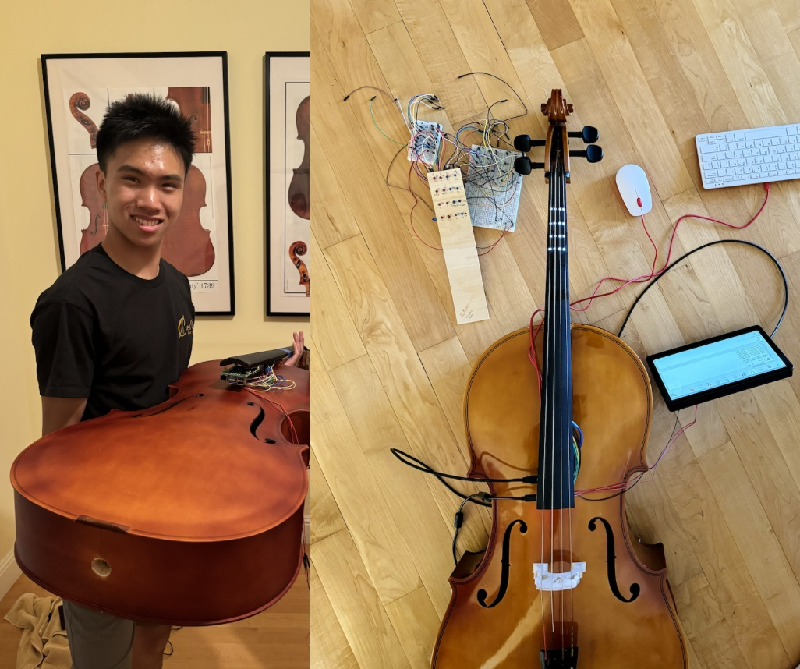
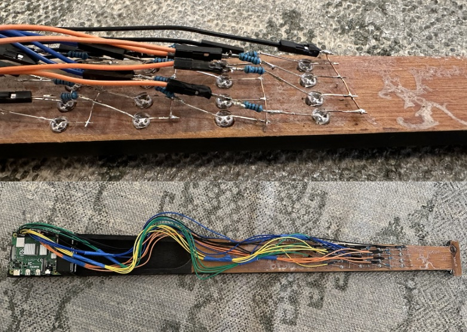
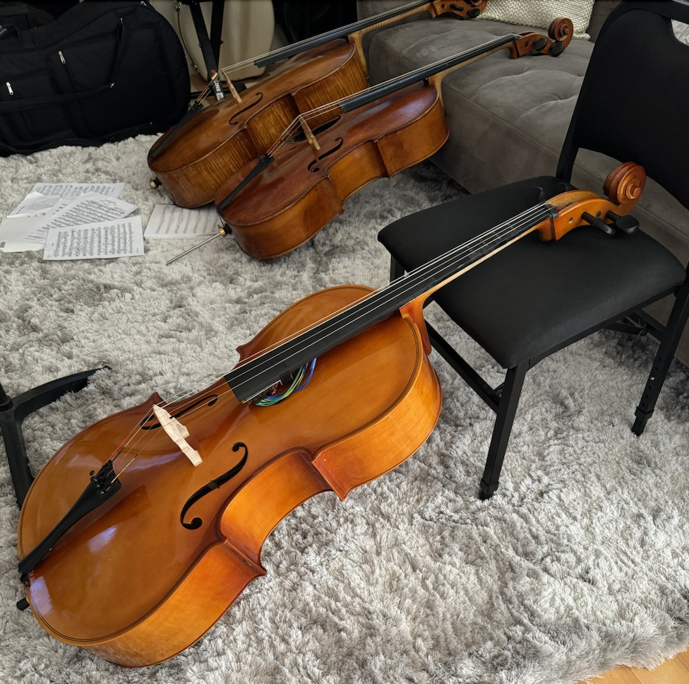

LUMI Cello Fingerboard
The very first LED-powered & music-responsive cello fingerboard to streamline the learning curve for cello, in particular, finger coordination, left hand posture and rhythm.

Background/Origin
As a cello mentor, I noticed that beginners often encounter finger coordination obstacles, leading to them tensing up their hands as overcompensation and making themselves injury prone. As principal cellist of the San Francisco Youth Symphony Orchestra and my school's orchestra, I have seen similar situations when I lead sectionals. Instead of moving their fingers off of rhythm, they force their fingers to move. Inspired by my cello teacher, I created this illuminating fingerboard that aims to ameliorate this issue. By lighting up individual LEDs at the right moments, according to a programmed piece, players are able to coordinate their fingers with a live visual instructions.

Engineering/Coding the fingerboard
Beginning with a piece of scrap wood I found in the garage, I drilled holes and integrated LED's into the wood to create a makeshift fingerboard. I connected every row of 4 LEDs in parallel, (a total of 4 fifths across 4 strings) and had 4 rows, making up "first position" on the cello. This allowed me to control each LED with a simple on off program that corresponded to a written music piece, enabling users to play multiple pieces, as long as they are pre-programmed into the MCU (the first piece being Twinkle Twinkle Little Star). After ensuring that the electrical components worked, I transitioned to a real life cello, taking apart the fingerboard and installing the electrical circuits.
- Microcontroller: Raspberry Pi 4 Model B
- Resistors: 2KΩ Resistors

Final Notes / Next Steps
Finishing up this build, I was able to see my creation work in a student's hands in real-time. Future steps could be scaling up the manufacturing of this fingerboard so that is becomes an accessible product.